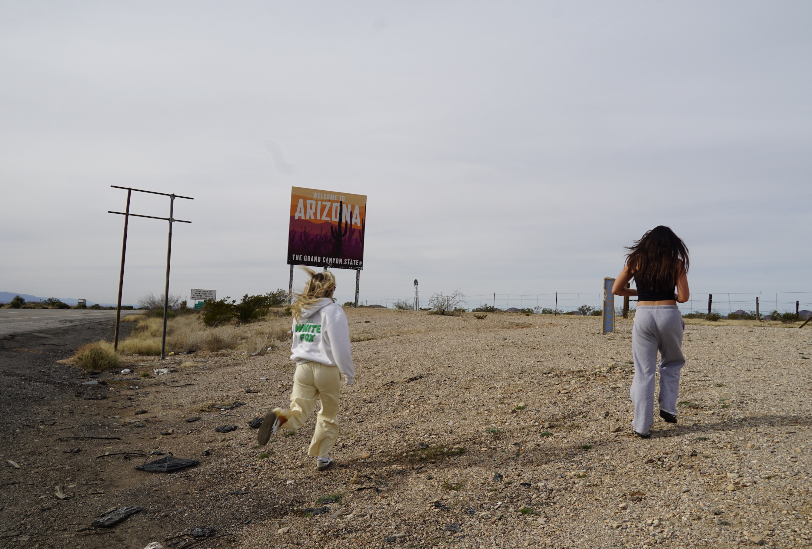

Projects
A selection of projects I've built across programming, data, and web development.
Engineering & Programming
-
C++ Board Game
In my freshman year, I independently designed and developed a fully functional board game in C++ using Visual Studio Code. The project required careful systems thinking, structured design, and disciplined execution from concept to completion — teaching me how to manage complex, multi-part projects and make sound decisions under constraints.
- Language: C++
- Focus: systems design, structured problem-solving
-
Sports Analytics Platform
A data-driven platform that aggregates real-time stadium and weather API data to generate more accurate predictive odds for sports outcomes. I designed and managed a full data pipeline, integrated multiple external data sources, and surfaced meaningful insights from complex, interconnected systems.
- Languages: Java, JavaScript, Python
- Focus: data pipelines, API integration, analytics
Web Projects
-
Portfolio Website
Built with semantic HTML and CSS, this multi-page site strengthened my ability to present complex information clearly and professionally. I worked independently, adapted quickly to new tools, and delivered a polished, functional result.
- Languages: HTML, CSS
- Focus: semantic structure, accessibility, responsive design
-
VR Space World
A browser-based VR experience set in a space world where you can explore and interact with a space machine. Built using A-Frame for immersive web VR — currently in development.
- Technologies: A-Frame, HTML, JavaScript
- Focus: VR/3D environments, interactive storytelling
-
Volume Game Website
An interactive web app that gamifies a simple volume control. Users must solve a math puzzle before they're allowed to adjust the slider — combining a practical UI element with a logic challenge. Built from scratch using HTML, CSS, and JavaScript.
- Languages: HTML, CSS, JavaScript
- Focus: interactivity, DOM manipulation, game logic
-
Fake Instagram
A concept tool that lets you rebuild and rebrand your Instagram profile without touching the real thing — so you can visualize exactly what you want it to look like before anyone else sees it. Think of it as a private design sandbox for your personal brand.
- Languages: HTML, CSS, JavaScript
- Focus: UI design, personal branding, prototyping
Business & Analysis
-
Social Media & Analytics Internships
Worked for different businesses as a social media manager and analytics specialist, analyzing product options using financial metrics and qualitative fit assessments.
My Photography
A collection of photos I've taken.
